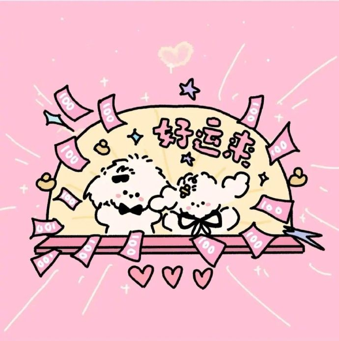

WishGraph
3.1 Data and Extraction Raw material → structured data
The corpus does not begin as a dataset. It begins as a pair of posts that people actually published on Weibo, and it becomes structured data through three steps: collecting the posts, letting a multimodal model read them against the ontology, and checking the result by hand. Step through the three stages below.
Internet posts
The raw material is not a spreadsheet yet — it is a pair of posts that a user actually published on Weibo: an illustrated good-luck image and a devotional picture of Caishen, the God of Wealth. Everything the ontology later formalises is already present here, as image, text, emoji and caption.

These two images are the input of the next step. Nothing here is typed by hand yet — the whole point of the pipeline is that the ontology decides what to look for.
AI recognition with prompt
Instead of describing the images freely, the multimodal model is handed the CSV headers and the ontology rules, then asked to fill one row per post.
Based on the headers of this CSV file and our ontology, please analyze these posts and fill them into the CSV file. There are 2 links (https://weibo.com/3054324355/5341196991072199; https://weibo.com/5974630971/5337482515973538). Requirements: Every post must have corresponding content for the nine core classes: CyberRitualCase, Subject, PerformativeAction, Platform, SecularPressure, RemediatedSignifier, RitualSymbol, Archetype, RemediationStrategy, and AffectiveOutcome. Specifically: For SecularPressure and AffectiveOutcome, you need to uncover the poster's expectations that may be revealed behind the text or wishes, and then categorize them accordingly. For RemediatedSignifier, you only need to identify whether the user posted an image or a video. For RitualSymbol, you need to interpret which ritualistic "imageries" (symbolic elements) are used in the images or videos. Subclasses such as Mantra, Emoji, etc., may not necessarily have corresponding content for every post; leaving them blank is normal. You must strictly adhere to the rules defined in the ontology.
Scanning the image, matching every element against the header row
Human check & structured data into CSV
The model's draft is inspected by hand and the terminology is unified against the ontology. What comes out is the full structured dataset — all 28 columns for 18 posts. Scroll the table in both directions.
| # | CyberRitualCase | Platform | Subject | PerformativeAction | PostingAction | CommentingAction | SecularPressure | MundanePressure | ExistentialPressure | RemediatedSignifier | ImageSignifier | VideoSignifier | RitualSymbol | Mantra | Emoji | VisualOrAuditoryMarker | Archetype | TraditionalArchetype | ModernArchetype | Animal | SecularCommodity | RemediationStrategy | DigitalTransposition | SacredAmplification | SacredHybridization | SecularIdolDeification | SymbolicEnchantment | AffectiveOutcome |
|---|---|---|---|---|---|---|---|---|---|---|---|---|---|---|---|---|---|---|---|---|---|---|---|---|---|---|---|---|
| 1 | Case_CatWish | Xiaohongshu | ExamWishPoster | Posting_ExamWish | Posting_ExamWish | — | ExamPressure | ExamPressure | — | ExamCatImg | ExamCatImg | — | KnittedKasayaLotusCushion | — | — | KnittedKasayaLotusCushion | CatMahayana | Mahayana | — | Cat | — | CatBuddha | — | — | CatBuddha | — | — | MemeTherapy |
| 2 | Case_DigitalEnlightenment | Tiktok | DigitalEnlightenmentPoster | Posting_BuddhaTeaching | Posting_BuddhaTeaching | — | ExistentialPressure_ModernAnxiety | — | ExistentialPressure_ModernAnxiety | PsychedelicBuddhaVideo | — | PsychedelicBuddhaVideo | LotusCushionPsychedelicAura | — | — | LotusCushionPsychedelicAura | Mahayana | Mahayana | — | — | — | PsychedelicAestheticRemediation | — | PsychedelicAestheticRemediation | — | — | — | InnerPeace |
| 3 | Case_HealthWish | Xiaohongshu | HealthWishPoster | Posting_HealthWish | Posting_HealthWish | — | HealthProblem | — | HealthProblem | BlueBuddhaImg | BlueBuddhaImg | — | — | — | — | — | MedicineBuddha | MedicineBuddha | — | — | — | RestoreOriginal | RestoreOriginal | — | — | — | — | HealthRecovery |
| 4 | Case_InstagramTraditionalPrayer | TraditionalPrayerPoster | Posting_NewYearPrayer | Posting_NewYearPrayer | — | MundanePressure_FutureUncertainty | MundanePressure_FutureUncertainty | — | TraditionalBuddhaPostImage | TraditionalBuddhaPostImage | — | — | — | — | — | MedicineBuddha | MedicineBuddha | — | — | — | RestoreOriginal | RestoreOriginal | — | — | — | — | NewYearVibes | |
| 5 | Case_InstagramWealth | MaterialisticUserWealthClaimCommenter | Commenting_ClaimWealthPosting_WealthManifesting | Posting_WealthManifesting | Commenting_ClaimWealth | MundanePressure_StatusAnxiety | MundanePressure_StatusAnxiety | — | SportsCarManifestingVideo | — | SportsCarManifestingVideo | Emoji_PrayingHandsLoFiBeatAndSlowMoMantra_ClaimEnergy | Mantra_ClaimEnergy | Emoji_PrayingHands | LoFiBeatAndSlowMo | LuxurySportsCar | — | — | — | LuxurySportsCar | Remediation_LuxuryCar | — | — | — | — | Remediation_LuxuryCar | FinancialFreedom | |
| 6 | Case_ManifestingKardashian | Xiaohongshu | KardashianManifestingPoster | Posting_ManifestingSpell | Posting_ManifestingSpell | — | CareerWealth | CareerWealth | — | KrisJennerMemeImg | KrisJennerMemeImg | — | ManifestingMantraText | ManifestingMantraText | — | — | KrisJennerPopIcon | — | KrisJennerPopIcon | — | — | PopIdolGod | — | — | — | PopIdolGod | — | WealthDelusion |
| 7 | Case_SubliminalRomance | Bilibili | RomanceSeekingUser | Posting_SubliminalVideo | Posting_SubliminalVideo | — | MundanePressure_RomanticAnxiety | MundanePressure_RomanticAnxiety | — | SubliminalButterflyVideo | — | SubliminalButterflyVideo | GlitterAestheticSubliminalAudioFrequency | — | — | GlitterAestheticSubliminalAudioFrequency | Butterfly | — | — | Butterfly | — | ButterflyGod | — | — | ButterflyGod | — | — | RomanticAttraction |
| 8 | Case_XWealthManifesting | XPlatform | ManifestPoster | Posting_Manifest2026 | Posting_Manifest2026 | — | MundanePressure_WealthDesire | MundanePressure_WealthDesire | — | CashManifestingVideo | — | CashManifestingVideo | Emoji_RedHeart | — | Emoji_RedHeart | — | StackOfCash | — | — | — | StackOfCash | Remediation_CashFetishization | — | — | — | — | Remediation_CashFetishization | Prosperity |
| 9 | Case_XiaohongshuCET6Comment | Xiaohongshu | CET6Commenter | Commenting_CET6Manifestation | — | Commenting_CET6Manifestation | ExamPressure | ExamPressure | — | KrisJennerReplyImage | KrisJennerReplyImage | — | Mantra_CET6Success | Mantra_CET6Success | — | — | KrisJennerPopIcon | — | KrisJennerPopIcon | — | — | PopIdolGod | — | — | — | PopIdolGod | — | AcademicSuccess |
| 10 | Case_UKWealthGodAltar | Xiaohongshu | UKWealthGodPoster | Posting_WealthGodAltar | Posting_WealthGodAltar | — | MundanePressure_FinancialProsperity | MundanePressure_FinancialProsperity | — | WealthGodAltarImg | WealthGodAltarImg | — | DigitalAltarDisplay | — | — | DigitalAltarDisplay | GodOfWealth | GodOfWealth | — | — | — | DigitalTransposition_WealthGodAltar | DigitalTransposition_WealthGodAltar | — | — | — | — | ProsperityHope |
| 11 | Case_GlobalTycoonMantra | ProsperityManifestPoster | Posting_GlobalTycoonMantra | Posting_GlobalTycoonMantra | — | MundanePressure_WealthStatusDesire | MundanePressure_WealthStatusDesire | — | GlobalTycoonChequeImg | GlobalTycoonChequeImg | — | Mantra_GlobalTycoonCashStacksLuxuryGoldAesthetic | Mantra_GlobalTycoon | — | LuxuryGoldAestheticCashStacks | WealthAssets | — | — | — | WealthAssets | SymbolicEnchantment_WealthAssets | — | — | — | — | SymbolicEnchantment_WealthAssets | ProsperityExpectation | |
| 12 | Case_TikTokLoveManifestation | Tiktok | LoveManifestPoster | Posting_LoveManifestVideo | Posting_LoveManifestVideo | — | MundanePressure_RomanticDesire | MundanePressure_RomanticDesire | — | LoveManifestationVideo | — | LoveManifestationVideo | Emoji_WhiteHeartSunsetAestheticRomanticMusic | — | Emoji_WhiteHeart | SunsetAestheticRomanticMusic | RomanticCoupleIdeal | — | RomanticCoupleIdeal | — | — | SymbolicEnchantment_LoveIdeal | — | — | — | — | SymbolicEnchantment_LoveIdeal | RomanticFulfillment |
| 13 | Case_CelebrityMemeReassurance | Tiktok | ReassuranceManifestPoster | Posting_ReassuranceMemeVideo | Posting_ReassuranceMemeVideo | — | MundanePressure_GeneralUncertainty | MundanePressure_GeneralUncertainty | — | SupportiveCelebrityMemeVideo | — | SupportiveCelebrityMemeVideo | Mantra_EverythingWillBeAlrightMantra_DoingAmazingSweetieRainbowAura | Mantra_EverythingWillBeAlrightMantra_DoingAmazingSweetie | — | RainbowAura | SupportiveCelebrityMomagerMeme | — | SupportiveCelebrityMomagerMeme | — | — | SecularIdolDeification_CelebrityMeme | — | — | — | SecularIdolDeification_CelebrityMeme | — | EmotionalReassurance |
| 14 | Case_FinancialSuccessAffirmation | Tiktok | FinancialSuccessPoster | Posting_SuccessAffirmationVideo | Posting_SuccessAffirmationVideo | — | MundanePressure_CareerFinancialAspiration | MundanePressure_CareerFinancialAspiration | — | BornToSucceedVideo | — | BornToSucceedVideo | Mantra_BornToSucceedExecutiveLuxuryAestheticEmoji_BlackHeart | Mantra_BornToSucceed | Emoji_BlackHeart | ExecutiveLuxuryAesthetic | SuccessfulExecutiveIdeal | — | SuccessfulExecutiveIdeal | — | — | SymbolicEnchantment_SuccessIdeal | — | — | — | — | SymbolicEnchantment_SuccessIdeal | FinancialEmpowerment |
| 15 | Case_GrandfatherHealthPrayer | Xiaohongshu | GrandfatherHealthPoster | Posting_HealthTalismanPrayer | Posting_HealthTalismanPrayer | — | ExistentialPressure_FamilyIllness | — | ExistentialPressure_FamilyIllness | HundredIllnessesRetreatTalismanImg | HundredIllnessesRetreatTalismanImg | — | Mantra_HundredIllnessesRetreatEmoji_PrayingHandsRedTalismanInk | Mantra_HundredIllnessesRetreat | Emoji_PrayingHands | RedTalismanInk | TaoistHealingTalisman | TaoistHealingTalisman | — | — | — | DigitalTransposition_HealingTalisman | DigitalTransposition_HealingTalisman | — | — | — | — | FamilyHealthRecovery |
| 16 | Case_GuanyinWishFulfillment | Xiaohongshu | GuanyinWishPoster | Posting_GuanyinWish | Posting_GuanyinWish | — | MundanePressure_RomanticFutureUncertainty | MundanePressure_RomanticFutureUncertainty | — | GuanyinWishImg | GuanyinWishImg | — | Mantra_WishImmediatelyRealizedGoldenAuraCloudAesthetic | Mantra_WishImmediatelyRealized | — | GoldenAuraCloudAesthetic | Guanyin | Guanyin | — | — | — | SacredAmplification_Guanyin | — | SacredAmplification_Guanyin | — | — | — | RomanticFulfillment |
| 17 | Case_WeiboCaishenBlessing | CaishenBlessingPoster | Posting_CaishenBlessing | Posting_CaishenBlessing | — | CareerWealth | CareerWealth | — | CaishenProsperityImg | CaishenProsperityImg | — | YuanbaoGoldCoinsGoldenHalo | Mantra_CaishenArrival | — | GoldenHaloGoldCoinsYuanbao | Caishen | Caishen | — | — | — | SacredAmplification_Caishen | — | SacredAmplification_Caishen | — | — | — | BusinessProsperity | |
| 18 | Case_WeiboLuckyRabbitWish | LuckyRabbitWishPoster | Posting_LikeCommentBlessing | Posting_LikeCommentBlessing | — | CareerWealth | CareerWealth | — | LuckyRabbitGoodLuckImg | LuckyRabbitGoodLuckImg | — | Mantra_GoodLuckComes | Mantra_GoodLuckComes | — | PinkCuteAesthetic | Rabbit | — | — | Rabbit | — | Remediation_RabbitLuck | — | — | — | — | Remediation_RabbitLuck | WishFulfillment |
Vertical scrollbar on the right, horizontal scrollbar at the bottom of the frame — the table keeps its own size instead of stretching the page.
3.2 A-Box and Knowledge Graph Structured data → RDF instances → knowledge graph
Through a Python script, the structured data recorded in
wishgraph_structured_cases.csv is converted into machine-readable RDF instances:
one individual for every case and for each of its dimension values, linked by the object
properties declared in the ontology. Loading those instances into the ontology described in this
section yields the WishGraph knowledge graph — the T-BOX (the schema, its
classes and properties) plus the A-BOX (the assertions about concrete cyber-ritual
cases) together make up Wish Graph, the graph that is queried in 3.3.

Cat Buddha Exam Wish Case;
the boxes around it are the dimension values attached to it — Xiaohongshu (platform),
Exam-Wishing User (subject), Posting Exam Wish (performative action),
Exam Pressure (secular pressure), Exam Cat Image (remediated signifier),
Cat Buddha Remediation (remediation strategy) and Meme Therapy (affective outcome).
Sacred Hybridization
3.3 SPARQL and Findings Query the graph and interpret the results
The five competency questions were reformulated as SPARQL queries and executed against the
A-Box. Every query below is followed by its actual result set, so the chapter doubles as
evidence that the ontology is queryable rather than merely descriptive. The queries run
against the cw: namespace of the T-Box
(http://www.ontologydesignpatterns.org/ont/cyberwishing/cw.owl#) and read each
dimension’s type from the sub-class the instance is typed with, so every table
below can be reproduced in Protégé or in any endpoint holding
ontology/wishgraph_full.ttl.
CQ1 — Performative Action, Subject and Platform
What performative actions are carried out in each cyber-ritual case, who performs them, and on which platform does the case circulate?
| Case | Performative Action (performed by) | Platform |
|---|---|---|
| Case_CatWish | Posting Exam Wish by Exam-Wishing User | Xiaohongshu Platform |
| Case_CelebrityMemeReassurance | Posting Reassurance Meme Video by Reassurance Manifesting User | Douyin Platform |
| Case_DigitalEnlightenment | Posting Buddha Teaching by Panda Chakra User | Douyin Platform |
| Case_FinancialSuccessAffirmation | Posting Success Affirmation Video by Financial Success User | Douyin Platform |
| Case_GlobalTycoonMantra | Posting Global Tycoon Mantra by Prosperity Manifesting User | Instagram Platform |
| Case_GrandfatherHealthPrayer | Posting Health Talisman Prayer by Grandfather Health Poster | Xiaohongshu Platform |
| Case_GuanyinWishFulfillment | Posting Guanyin Wish by Guanyin Wish Poster | Xiaohongshu Platform |
| Case_HealthWish | Posting Health Wish by Health-Wishing User | Xiaohongshu Platform |
| Case_InstagramTraditionalPrayer | Posting New Year Prayer Action by Devout Instagram User | Instagram Platform |
| Case_InstagramWealth | Commenting Claim Wealth by Commenter Rammyy; Posting Wealth Manifesting by Materialistic User | Instagram Platform |
| Case_ManifestingKardashian | Posting Manifesting Spell by Ambitious User | Xiaohongshu Platform |
| Case_SubliminalRomance | Posting Subliminal Video by Romance Seeking User | Bilibili Platform |
| Case_TikTokLoveManifestation | Posting Love Manifestation Video by Love Manifesting User | Douyin Platform |
| Case_UKWealthGodAltar | Posting Wealth God Altar by UK Wealth God Poster | Xiaohongshu Platform |
| Case_WeiboCaishenBlessing | Posting Caishen Blessing by Caishen Blessing Poster | Weibo Platform |
| Case_WeiboLuckyRabbitWish | Posting Like-and-Comment Blessing by Lucky Rabbit Wish Poster | Weibo Platform |
| Case_XWealthManifesting | Posting Manifest 2026 Action by User Shally | X Platform |
| Case_XiaohongshuCET6Comment | Commenting CET-6 Manifestation by Commenter Anhui Student | Xiaohongshu Platform |
Read-out. Across the eighteen cases the ritual is overwhelmingly a
posting act: sixteen cases consist of publishing a wishing artefact, one is a pure
commenting ritual (Case_XiaohongshuCET6Comment), and one —
Case_InstagramWealth — carries both, a materialistic user posting a wealth-manifesting
video and a commenter claiming that wealth in the replies. That split is why
cw:performedBy is modelled on the action rather than on the case: one case can
host more than one ritual role. Platform distribution follows the same logic —
Xiaohongshu hosts seven of the eighteen cases, TikTok four, Instagram three, Weibo two, and
Bilibili and X one each — so the practice is concentrated on image-and-note platforms even though
the corpus also reaches the short-video and microblogging ecosystems.
CQ2 — Trigger / Pressure
Which secular pressure triggers each cyber-ritual case, and what type of pressure is it?
| Case | Secular Pressure | Pressure Type |
|---|---|---|
| Case_CatWish | Exam Pressure | Mundane Pressure |
| Case_CelebrityMemeReassurance | General Uncertainty Pressure | Mundane Pressure |
| Case_DigitalEnlightenment | Modern Anxiety and Existential Pressure | Existential Pressure |
| Case_FinancialSuccessAffirmation | Career and Financial Aspiration Pressure | Mundane Pressure |
| Case_GlobalTycoonMantra | Wealth and Status Desire Pressure | Mundane Pressure |
| Case_GrandfatherHealthPrayer | Family Illness Pressure | Existential Pressure |
| Case_GuanyinWishFulfillment | Romantic Future Uncertainty Pressure | Mundane Pressure |
| Case_HealthWish | Health Problem | Existential Pressure |
| Case_InstagramTraditionalPrayer | Future Uncertainty Pressure | Mundane Pressure |
| Case_InstagramWealth | Social Status Anxiety | Mundane Pressure |
| Case_ManifestingKardashian | Career and Wealth Pressure | Mundane Pressure |
| Case_SubliminalRomance | Romantic Anxiety | Mundane Pressure |
| Case_TikTokLoveManifestation | Romantic Desire Pressure | Mundane Pressure |
| Case_UKWealthGodAltar | Financial Prosperity Pressure | Mundane Pressure |
| Case_WeiboCaishenBlessing | Career and Wealth Pressure | Mundane Pressure |
| Case_WeiboLuckyRabbitWish | Career and Wealth Pressure | Mundane Pressure |
| Case_XWealthManifesting | Wealth Desire Pressure | Mundane Pressure |
| Case_XiaohongshuCET6Comment | Exam Pressure | Mundane Pressure |
Read-out. Fifteen of the eighteen cases respond to a
mundane pressure — exam or career pressure, future uncertainty, status anxiety,
romantic desire, wealth and prosperity wishes — while only three are triggered by an
existential pressure: modern spiritual anxiety, illness, and illness inside the
family. Cyber-ritual wishing in this corpus is therefore predominantly a response to
everyday precarity rather than to mortality or cosmic doubt. Note that the same pressure
class recurs across ritual formats and platforms: exam pressure triggers both a posting ritual
(Case_CatWish) and a commenting ritual (Case_XiaohongshuCET6Comment), and
career-and-wealth pressure spans Xiaohongshu, Weibo and Instagram. The pressure type is not
stored as a literal string — it is read from the sub-class the pressure instance is typed with, so
the answer is derived from the class hierarchy rather than duplicated in the data.
CQ3 — Transformation and Affective Outcome
Which remediation strategy transforms each cyber-ritual case, and what outcome does the case resolve into?
| Case | Remediation Strategy | Strategy Type | Affective Outcome |
|---|---|---|---|
| Case_CatWish | Cat Buddha Remediation | Sacred Hybridization Remediation | Meme Therapy |
| Case_CelebrityMemeReassurance | Celebrity Meme Deification | Secular Idol Deification Remediation | Emotional Reassurance |
| Case_DigitalEnlightenment | Psychedelic Aesthetic Remediation | Sacred Amplification Remediation | Sincere Hope for Inner Peace |
| Case_FinancialSuccessAffirmation | Success Ideal Enchantment | Symbolic Enchantment Remediation | Financial Empowerment |
| Case_GlobalTycoonMantra | Wealth Assets Enchantment | Symbolic Enchantment Remediation | Prosperity Expectation |
| Case_GrandfatherHealthPrayer | Healing Talisman Digital Transposition | Digital Transposition Remediation | Family Health Recovery |
| Case_GuanyinWishFulfillment | Guanyin Sacred Amplification | Sacred Amplification Remediation | Romantic Fulfillment |
| Case_HealthWish | Restoring Original Sacred Form | Digital Transposition Remediation | Hope for Health Recovery |
| Case_InstagramTraditionalPrayer | Restoring Original Sacred Form | Digital Transposition Remediation | Sincere Hope for New Year Vibes |
| Case_InstagramWealth | Luxury Car Fetishization | Symbolic Enchantment Remediation | Hope for Financial Freedom |
| Case_ManifestingKardashian | Playful Remediation of Pop Idol | Secular Idol Deification Remediation | Ironic Comfort of Wealth Delusion |
| Case_SubliminalRomance | Butterfly Subliminal Remediation | Sacred Hybridization Remediation | Sincere Hope for Romantic Attraction |
| Case_TikTokLoveManifestation | Love Ideal Enchantment | Symbolic Enchantment Remediation | Romantic Fulfillment |
| Case_UKWealthGodAltar | Wealth God Altar Digital Transposition | Digital Transposition Remediation | Prosperity Hope |
| Case_WeiboCaishenBlessing | Caishen Sacred Amplification | Sacred Amplification Remediation | Business Prosperity |
| Case_WeiboLuckyRabbitWish | Rabbit Luck Enchantment | Symbolic Enchantment Remediation | Wish Fulfillment |
| Case_XWealthManifesting | Cash Fetishization Strategy | Symbolic Enchantment Remediation | Sincere Hope for Prosperity |
| Case_XiaohongshuCET6Comment | Playful Remediation of Pop Idol | Secular Idol Deification Remediation | Sincere Hope for Academic Success |
Read-out. All five remediation types are attested, and together they form a gradient of distance from the original sacred source. Digital Transposition (four cases) restores the traditional icon essentially unchanged — a Buddha photograph, a healing talisman, a wealth-god altar. Sacred Amplification (three cases) keeps an already sacred source and intensifies its aura. Sacred Hybridization (two cases) crosses the sacred frame with a non-sacred figure. Secular Idol Deification (three cases) and Symbolic Enchantment (six cases) replace the deity outright — with a celebrity meme, a sports car, a cheque or a stack of cash. Secular enchantment is thus the single largest strategy in the corpus. The outcome vocabulary tracks the same gradient: restorative strategies resolve into domain-specific reassurance (health, prosperity, family recovery), while the deifying and enchanting strategies resolve into self-persuasive states such as Ironic Comfort of Wealth Delusion, Prosperity Expectation or Financial Empowerment — seventeen distinct outcomes for eighteen cases.
CQ4 — Signifier and Ritual Symbol
Which remediated signifier is employed in each cyber-ritual case, and which ritual symbols does it contain?
| Case | Remediated Signifier | Signifier Type | Ritual Symbols |
|---|---|---|---|
| Case_CatWish | Exam Cat Image | Image Signifier | Knitted Kasaya | Lotus Cushion |
| Case_CelebrityMemeReassurance | Supportive Celebrity Meme Video | Video Signifier | Everything Will Be Alright Mantra | Doing Amazing Sweetie Mantra | Rainbow Aura |
| Case_DigitalEnlightenment | Psychedelic Buddha Video | Video Signifier | Lotus Cushion | Psychedelic Aura |
| Case_FinancialSuccessAffirmation | Born to Succeed Video | Video Signifier | Born to Succeed Mantra | Executive Luxury Aesthetic | Black Heart Emoji |
| Case_GlobalTycoonMantra | Global Tycoon Cheque Image | Image Signifier | Global Tycoon Mantra | Cash Stacks Marker | Luxury Gold Aesthetic |
| Case_GrandfatherHealthPrayer | Hundred Illnesses Retreat Talisman Image | Image Signifier | Hundred Illnesses Retreat Mantra | Praying Hands Emoji | Red Talisman Ink |
| Case_GuanyinWishFulfillment | Guanyin Wish Image | Image Signifier | Wish-Immediately-Realized Mantra | Golden Aura | Cloud Aesthetic |
| Case_HealthWish | Blue Buddha Image | Image Signifier | — |
| Case_InstagramTraditionalPrayer | Traditional Buddha Post Image | Image Signifier | — |
| Case_InstagramWealth | Sports Car Manifesting Video | Video Signifier | Praying Hands Emoji | Lo-Fi Beat and Slow Motion | Claim Energy Mantra |
| Case_ManifestingKardashian | Kris Jenner Meme Image | Image Signifier | Manifesting Mantra Text |
| Case_SubliminalRomance | Subliminal Butterfly Video | Video Signifier | Glitter Aesthetic | Subliminal Audio Frequency |
| Case_TikTokLoveManifestation | Love Manifestation Video | Video Signifier | White Heart Emoji | Sunset Aesthetic | Romantic Music |
| Case_UKWealthGodAltar | Wealth God Altar Image | Image Signifier | Digital Altar Display |
| Case_WeiboCaishenBlessing | Caishen Prosperity Image | Image Signifier | Yuanbao Ingot | Gold Coins | Golden Halo |
| Case_WeiboLuckyRabbitWish | Lucky Rabbit Good Luck Image | Image Signifier | Good Luck Comes Mantra |
| Case_XWealthManifesting | Cash Manifesting Video | Video Signifier | Red Heart Emoji Symbol |
| Case_XiaohongshuCET6Comment | Kris Jenner Reply Image | Image Signifier | CET-6 Success Mantra |
Read-out. Signifier type tracks the platform economy: eleven cases use still
images, which cluster on Xiaohongshu, Instagram and Weibo where they are easy to
save, re-post and keep as a phone wallpaper, while seven use videos, which dominate
TikTok, Bilibili and X, where motion and audio carry the ritual charge. Ritual symbols are not
decoration — they are the load-bearing vocabulary of the practice: a knitted kasaya, a lotus
cushion, a manifesting mantra, a talisman drawn in red ink, a praying-hands emoji, an ingot of gold.
Only two cases (Case_HealthWish and Case_InstagramTraditionalPrayer)
carry no ritual symbol at all, and both are Digital Transposition cases, in which sacredness is
inherited from the source rather than produced by remediation. Note the modelling decision: symbols
hang off the signifier, not off the case, because one signifier can circulate several
symbols at once — the richest case in the corpus stacks three.
CQ5 — Archetype and Archetype Type
For each cyber-ritual case, which archetype is remediated by its signifier, and what type of archetype is it?
| Case | Archetype | Archetype Type |
|---|---|---|
| Case_CatWish | Cat Archetype, Mahayana Buddhist Archetype | Animal Archetype, Traditional Archetype |
| Case_CelebrityMemeReassurance | Supportive Celebrity Momager Meme | Modern Archetype |
| Case_DigitalEnlightenment | Mahayana Buddhist Archetype | Traditional Archetype |
| Case_FinancialSuccessAffirmation | Successful Executive Ideal | Modern Archetype |
| Case_GlobalTycoonMantra | Wealth Assets | Secular Commodity Archetype |
| Case_GrandfatherHealthPrayer | Taoist Healing Talisman | Traditional Archetype |
| Case_GuanyinWishFulfillment | Guanyin Bodhisattva | Traditional Archetype |
| Case_HealthWish | Medicine Buddha | Traditional Archetype |
| Case_InstagramTraditionalPrayer | Medicine Buddha | Traditional Archetype |
| Case_InstagramWealth | Luxury Sports Car | Secular Commodity Archetype |
| Case_ManifestingKardashian | Kris Jenner Pop Icon | Modern Archetype |
| Case_SubliminalRomance | Traditional Butterfly Symbol | Animal Archetype |
| Case_TikTokLoveManifestation | Romantic Couple Ideal | Modern Archetype |
| Case_UKWealthGodAltar | God of Wealth | Traditional Archetype |
| Case_WeiboCaishenBlessing | Caishen the God of Wealth | Traditional Archetype |
| Case_WeiboLuckyRabbitWish | Lucky Rabbit | Animal Archetype |
| Case_XWealthManifesting | Stack of Cash Commodity Archetype | Secular Commodity Archetype |
| Case_XiaohongshuCET6Comment | Kris Jenner Pop Icon | Modern Archetype |
Read-out. Four archetype types are attested across the corpus:
Traditional (Mahayana Buddhism, Medicine Buddha, Guanyin, Caishen, the God of
Wealth and a Taoist healing talisman — eight cases), Modern (Kris Jenner and a
supportive celebrity momager meme — five cases), Animal (the cat, the butterfly,
the lucky rabbit — three cases) and Secular Commodity (the luxury sports car, the
stack of cash, wealth assets, a romantic couple ideal and a successful executive ideal — three
cases). The last two categories are the analytical payoff of the ontology: they mark the moment when
the sacred slot is filled not by a deity but by capital. Case_CatWish is the
only hybrid case, remediating an animal archetype and a traditional one through a single image —
precisely the cw:SacredHybridization that its strategy instance is typed with. As in
CQ2, the archetype type is read from the class hierarchy rather than from a literal.